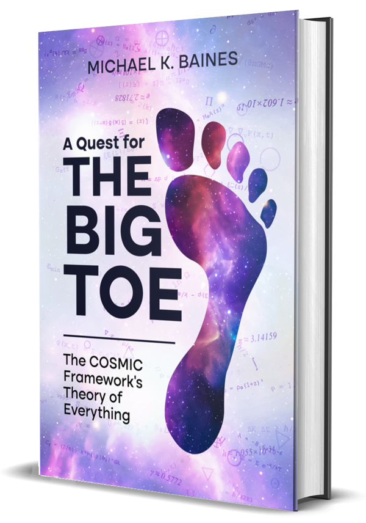

Free to read
What is the universe made of?
A Quest for The Big TOE
An information-first approach to physics, set out as predictions that can be tested, with the evidence for and against each one. Revised in public as the evidence changes. Print edition in preparation.
About the book →